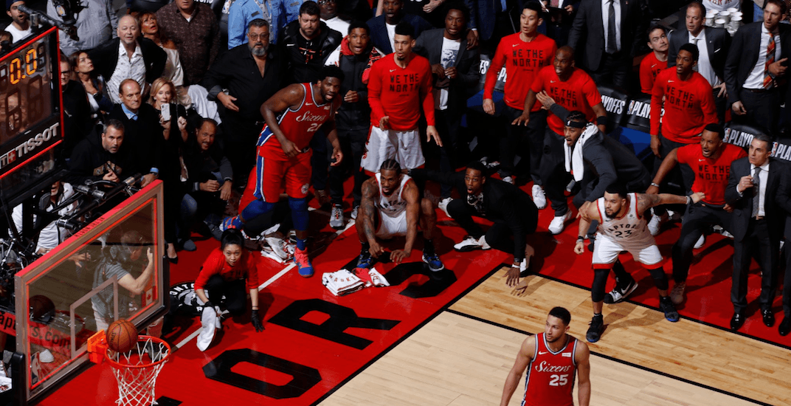

SERIE VS PHILADELPHIA 76ers Partido 1 El partido acabó 108-95 a favor de los Raptors que se llevaban la primera victoria de la semifinal de conferencia Partido 2 El segundo partido finalizó con un 79-84 a favor de los de Philadelphia que igualaban la serie Partido 3 El tercer partido tambien se lo le´varon lo sSixers con un resultado de 116-95 y se ponían por delante en la serie Partido 4 En el cuarto partido los Raptors ganaron 96-101 e igualaban a dos la serie Partido5 El quinto partido fue una clara victoria del equipo canadiense que se impuso por 125-89 y estaban a una victoria de disputar la final de conferencia Partido6 En el sexto los Sixers ganaron 112-101 y forzaban e séptimo y último partido Partido 7 El último partido de la serie se decidía con una canasta de Kawhi Leonard en la última jugada del partido dando la victoria a los Toronto Raptors por 92-90 que disputaban la primera final de conferencia de su historia 